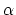
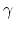
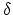
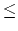

perpendicular to the base line, it is out of bounds and disqualified. From this information, the height of the rocket may be determined as follows:
On each sight line, find the point on that sight line closest to the other sight line. The point halfway between these two points is assumed to be the location of the rocket at the top of its flight. The height achieved by the rocket is the vertical distance of this point above the launch platform.
This problem is to write a program which, given the parameters HA
(the distance of the measuring device A
above the launch platform in feet), HB
(the distance of the measuring device B
above the launch platform in feet), 
(the elevation angle of the rocket in degrees measured by the left observer A
),
(the elevation angle of the rocket in degrees observed by the right observer B
), 
(the azimuth angle in degrees measured by the left observer A
) and 
(the azimuth angle in degrees measured by the right observer B
), computes the height of the rocket above the launch platform in feet to the nearest foot.
The first line of input contains the number of shots that follow N
(1N100)
and the parameters HA
and HB
in that order as decimal values (the values are separated by one or more spaces). These values would be measured once at the beginning of the day and remain fixed through all N
rocket shots. Each succeeding line of input will contain the angles
,,
and
in that order (measured in degrees) as decimal values. The angles
,
and
will be strictly between 0 and 90 degrees and
will be strictly between 90 degrees and 180 degrees.
For each set of four angles (other than the end indicator), the output contains a line with the shot number,
(1...N)
, a colon, a space and finally the height above the field in feet to the nearest foot with no leading spaces.
4 5.25 2.92
39.6 36.0 35.4 151.2
65.1 71.2 16.5 160.6
59.4 59.5 43.8 139.0
45.0 41.2 32.9 152.6
1: 50
2: 135
3: 119
4: 58